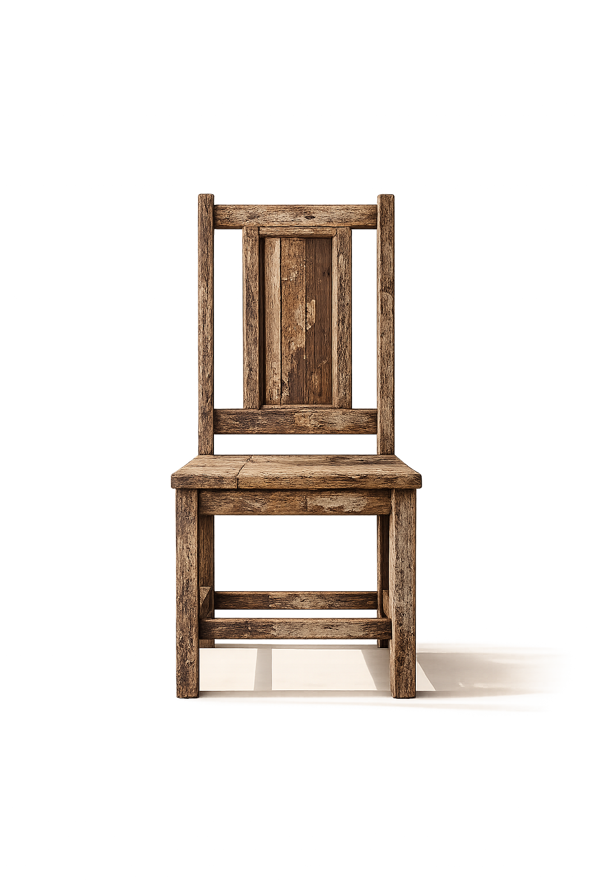
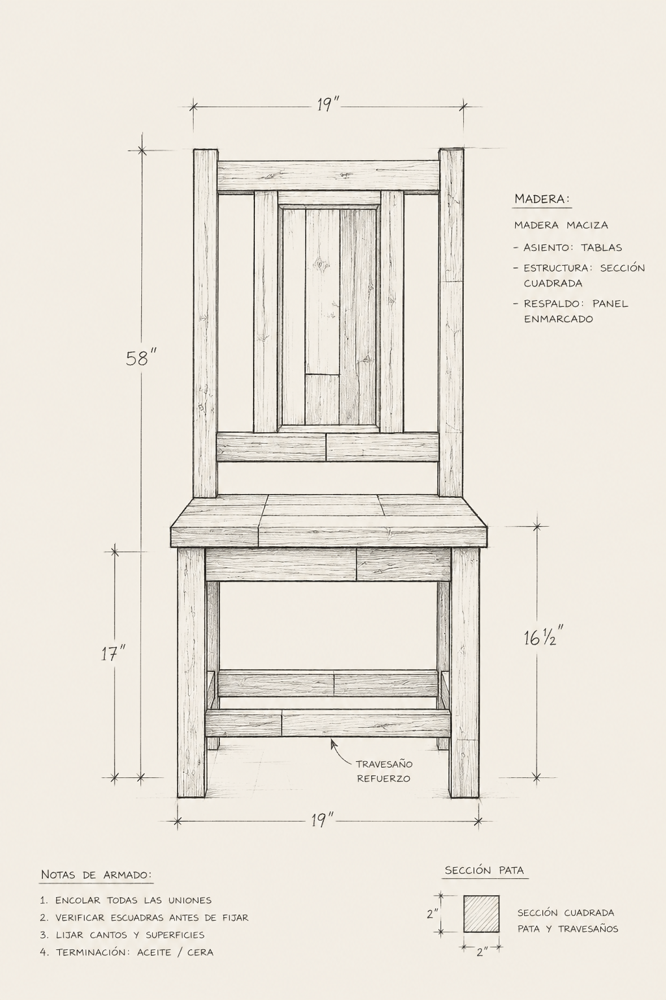
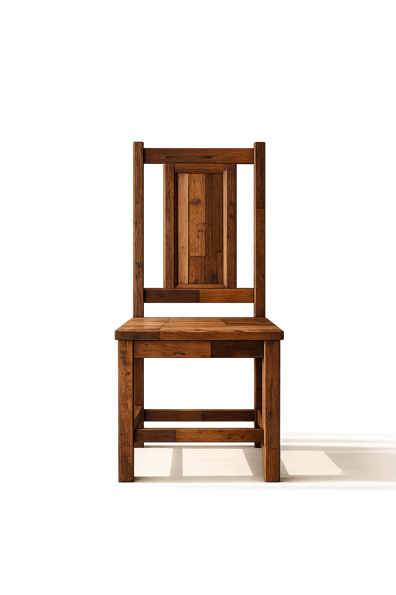

Un recorrido por el oficio real: aprender a observar la madera, diagnosticar su estado
y tomar decisiones fundamentadas antes de intervenir cualquier pieza.
"Llegué sin experiencia y terminé restaurando una silla que pertenecía a mi abuelo. Lo que más valoro es que no solo enseñan técnicas, sino también a entender cada pieza antes de intervenirla."
Martina Ríos Río Cuarto, Córdoba."El equilibrio entre teoría y práctica es excelente. Cada clase está pensada para que entiendas el porqué de cada decisión y no simplemente repitas un procedimiento."
Joaquín Ferrero Posadas, Misiones."Se nota la experiencia de quienes enseñan. Aprendés técnicas tradicionales, pero con una mirada muy actual sobre el diseño y la puesta en valor de cada mueble."
Luciano Peralta Villa General Belgrano, Córdoba."No esperaba lograr tanto en tan poco tiempo. Restauré una cómoda que iba a tirar y hoy es la pieza que más elogios recibe en mi casa."
Carolina Sosa Mar del Plata, Buenos Aires."Vine buscando un hobby y terminé encontrando un oficio. El grupo reducido permite que cada consulta tenga una respuesta real y personalizada."
Tomás Aguirre San Carlos de Bariloche, Río Negro.Restaurar no es solo aplicar técnicas: es aprender a leer una pieza, comprender cómo fue construida y qué la deterioró. Cada decisión de intervención surge del conocimiento del material, no de la prueba y el error.
"Los objetos acumulan experiencias, usos y significados a lo largo del tiempo."
Filosofía RAÍZCómo leer el estado de una pieza, identificar causas de deterioro y planificar la intervención.
Técnicas correctas de limpieza, decapado y acondicionamiento según el tipo de madera y el daño.
El proceso correcto: granos, sentidos del lijado y cómo evitar errores que comprometan la pieza.
Aplicación de tinturas, pigmentos y acabados. Cómo elegir el tratamiento justo para cada madera.
Métodos de sellado, protección y cuidado a largo plazo para preservar el resultado de cada restauración.
La trayectoria de quien enseña es parte de lo que se aprende.
El contenido del instructor se completará próximamente. El equipo docente de RAÍZ combina más de una década de experiencia en restauración y diseño de interiores.
El contenido del instructor técnico se completará próximamente. Los instructores de RAÍZ trabajan activamente en proyectos de restauración.
Los grupos son reducidos por diseño: 12 estudiantes como máximo para garantizar atención personalizada y acceso real al material y a las herramientas durante cada clase.
Completá tus datos y nos ponemos en contacto para coordinar la inscripción.
Cupos limitados a 12 personas por grupo. Te respondemos en menos de 48 horas.